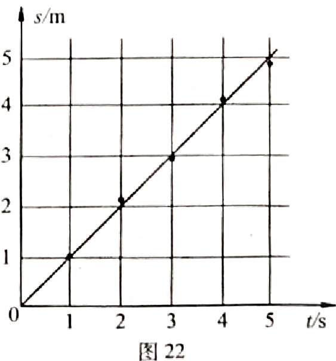
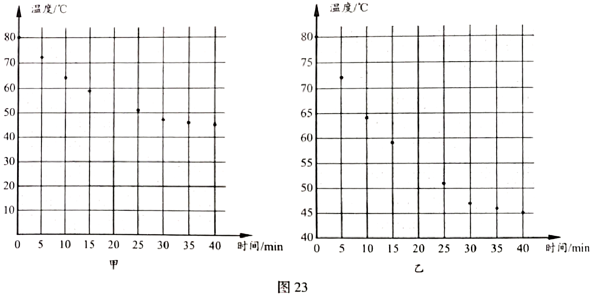

2018年北京市中考物理试题 · 科普阅读 第32题
四、科普阅读题（共4分）
请阅读《物理实验中的图像法》回答32题。
物理实验中的图像法
物理实验中的图像法是一种整理、分析数据的有效方法，图像中的图线可直观、简洁地显示出因变量随着自变量变换的趋势或规律。如果想要将物理实数据绘制成图像，可以按照下面的步骤来进行。

第一步，建立坐标轴、标注物理量和设定分度。首先建立坐标轴，通常用横轴代表自变量，纵轴代表因变量，在坐标轴上分别标注自变量和因变量的名称及单位；然后，设定坐标分度值。为了使绘制的图线比较均匀地分布在整幅坐标纸上，而不要偏在一角或一边，坐标分度值可以不从零开始。在一组数据中，自变量与因变量均有最低值和最高值，分度时，可用低于最低值的某一整数值作起点，高于最高值的某一整数值作终点。第二步，根据数据描点。描点时根据数据在坐标纸上力求精准地画出对应的点。
第三步，绘制图线。绘制图线时不要把数据点逐点连接成折线，而应依据数据点的整体分布趋势，描绘出一条直线或光滑曲线，让尽可能多的点在图线上，或让数据点比较均匀地分布在图线两旁，这样绘制出的图线比图上的任何一个数据点更适合作为进行分析预测的依据。
倒如，小宇记录了自己沿直线步行过程中的时间及所对应的路程，图22中的黑点是他根据记录的数据在坐标纸上描出的数据点，利用这些数据点绘制出了图22中的直线。利用这条直线可以清楚地看出小宇步行的过程近似为匀速运动，还可以利用图线上的点计算出小宇步行过程中的速度，进而用速度预测出他在某一段时间内步行的路程。
32．请根据上述材料，回答下列问题：
（1）根据图22所示的图像，预测小宇步行10s的路程为 m。
（2）下表是某同学记录的物体温度随时间变化的实验数据。
时间/min | 0 | 5 | 10 | 15 | 20 | 25 | 30 | 35 | 40 |
温度/℃ | 80 | 72 | 64 | 59 | 55 | 51 | 47 | 46 | 45 |
① 若要绘制上述物体的温度随时间变化的图像，应选择图23中 图更合理。（选填“甲”或“乙”）
② 请在你选择的图中描出第20min时的温度数据点，并绘制出本次实验中物体温度随时间变化的图线。
